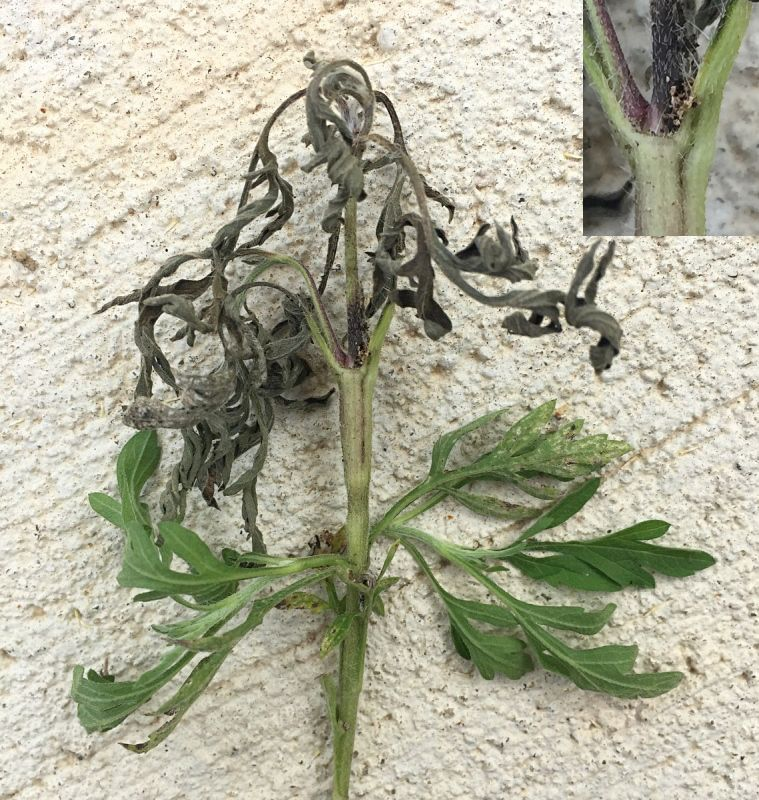
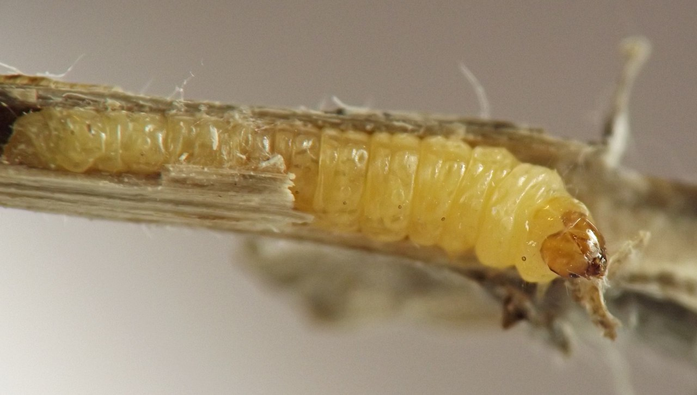
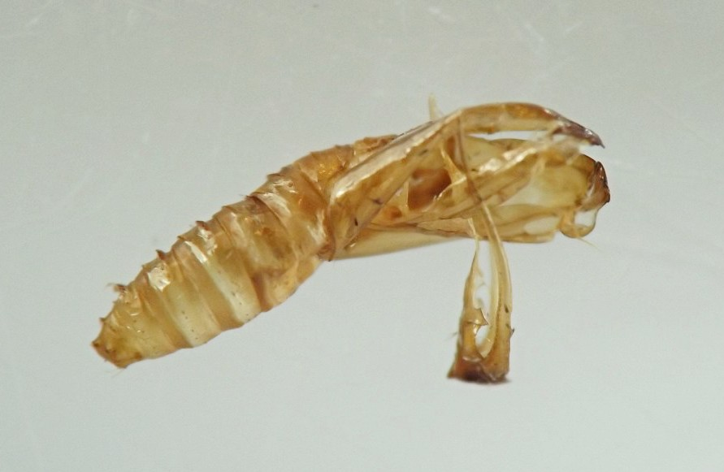
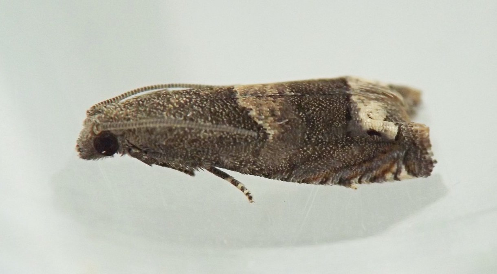

Stem borer (Lepidoptera: Tortricidae) in Ambrosia
| Record no.: | 0038 |
|---|---|
| Feeding guild: | Stem borer |
| Taxonomy: | Lepidoptera: Tortricidae: Epiblema sp. |
| Stages observed: | trace, larva, pupa, adult |
| Hosts in Ambrosia: | A. artemisiifolia (common ragweed) |
I found a larva in its tunnel in the interior of an upper stem of common ragweed near the stem tip. There was no obvious swelling to the affected stem. The tunnel spanned most of the stem diameter and filled the upper 80-90mm of stem, with the lower 70mm of stem unaffected. The larva dwelled at the upper end of the tunnel with a ~20mm-long rod of compacted solid frass immediately below it. The larva was a sunny yellow color with an orange-brown head capsule. It pupated in the stem and the pupa was thrust through the outer wall of the stem when the adult emerged.
The adult has not been examined by an authority, but its plumage is closely similar to specimens identified as E. strenuana and E. minutana at BugGuide.net (VanDyk 2024a&b). Both of those species are known from stems of ragweed, and there is some indication they may have noticeably different feeding habits (Gilligan et al. 2020, Stegmaier 1971), but the larva from the current study seemed to exhibit a mix of the feeding habit characteristics supposedly useful for separating the two species.

 Prev
Prev
{kind=link}
{kind=link}

{kind=link}

{kind=link}

{kind=link}
{kind=link}
{kind=link}
{kind=link}
- Gilligan, T., Wright, D., Brown, R., Augustinus, B.A., and U. Schaffner. 2020. Taxonomic issues related to biological control prospects for the ragweed borer, Epiblema strenuana (Lepidoptera: Tortricidae). Zootaxa 4729:347-358.[return to in-text citation]
- Stegmaier, C.E. 1971. Lepidoptera, Diptera, and Hymenoptera associated with Ambrosia artemisiifolia (Compositae) in Florida. Florida Entomologist 54:259–272.[return to in-text citation]
- VanDyk, J., ed. 2024a. Species Epiblema minutana - minute ragweed borer - Hodges#3172. Species page at BugGuide.net. Retrieved March 3, 2024 from https://bugguide.net/node/view/1881351/bgimage.[return to in-text citation]
- VanDyk, J., ed. 2024b. Species Epiblema strenuana - ragweed borer - Hodges#3172. Species page at BugGuide.net. Retrieved March 3, 2024 from https://bugguide.net/node/view/242550/bgimage.
Page created: September 4, 2025. Last update: September 5, 2025